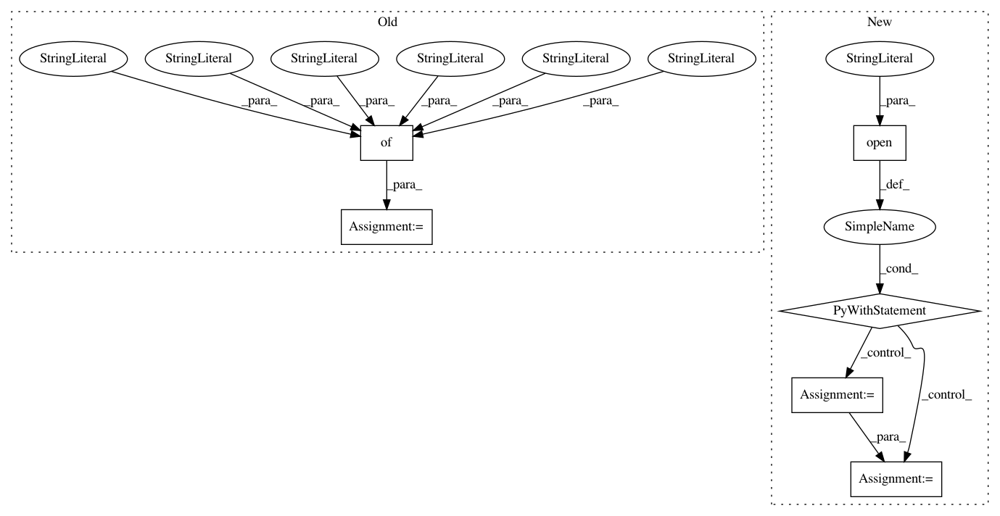

f04c2384c98e80b37ac442f5e0fb6152d4ee059e,trixi/logger/visdom/numpyvisdomlogger.py,NumpyVisdomLogger,show_svg,#NumpyVisdomLogger#Any#Any#Any#Any#,845
Before Change
if opts is None:
opts = {}
vis_task = {
"type": "svg",
"svg": svg,
"name": name,
"env_appendix": env_appendix,
"opts": opts
}
self._queue.put_nowait(vis_task)
def __show_svg(self, svg, name=None, env_appendix="", opts=None, **kwargs):
After Change
if opts is None:
opts = {}
with open(svg, "r") as fileobj:
svgstr = fileobj.read()
opts.update(dict(
title=name
))
In pattern: SUPERPATTERN
Frequency: 3
Non-data size: 6
Instances
Project Name: MIC-DKFZ/trixi
Commit Name: f04c2384c98e80b37ac442f5e0fb6152d4ee059e
Time: 2019-03-01
Author: t.adler@dkfz-heidelberg.de
File Name: trixi/logger/visdom/numpyvisdomlogger.py
Class Name: NumpyVisdomLogger
Method Name: show_svg
Project Name: aws/sagemaker-python-sdk
Commit Name: 1787f783e2f9fc4f2144bd4b4f90281a2bb018b5
Time: 2019-03-11
Author: andremoeller@users.noreply.github.com
File Name: tests/integ/test_inference_pipeline.py
Class Name:
Method Name: test_inference_pipeline_model_deploy
Project Name: ilastik/ilastik
Commit Name: b261f6e44d93d4a9d767d81add53f0f9071a42bb
Time: 2014-07-22
Author: bergs@janelia.hhmi.org
File Name: lazyflow/utility/io/tiledVolume.py
Class Name: TiledVolume
Method Name: _retrieve_tile